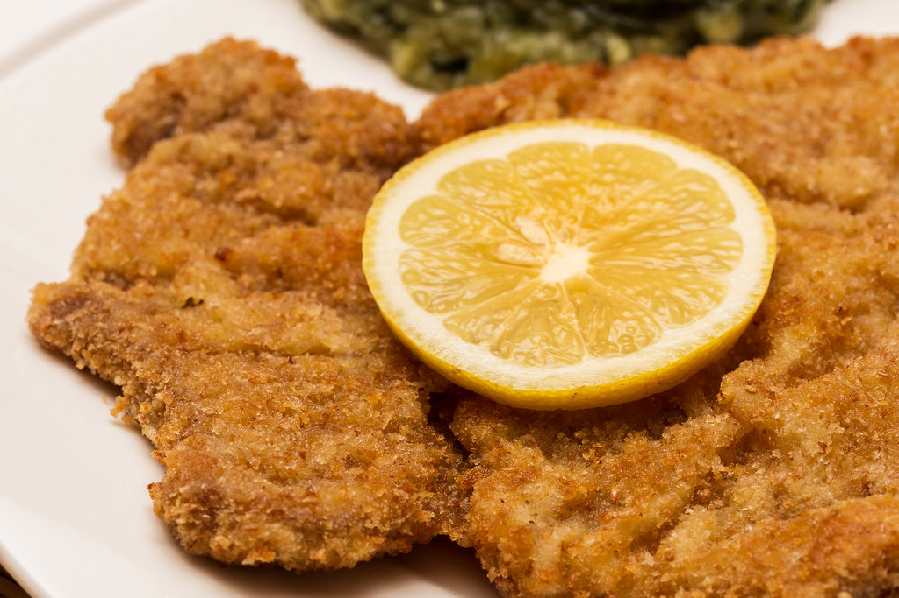

Wiener schnitzel

Description
Wiener Schnitzel is a traditional Austrian dish made from thinly pounded veal, coated in flour, egg, and breadcrumbs, then fried until golden and crisp. It is light, tender, and typically served hot with lemon and simple sides like potatoes or salad.
Ingredients
- 2 veal cutlets (about 150–180 g each)
- Salt
- All-purpose flour
- 2 eggs
- Breadcrumbs (fine, plain)
- Clarified butter or neutral oil (for frying)
- Lemon wedges (to serve)
Steps
- Place the veal between sheets of cling film and gently pound it to about 3-4 mm thickness. Season lightly with salt.
- Dredge the cutlets in flour (shake off excess).
- Dip into beaten eggs.
- Coat with breadcrumbs — do not press them in (important for a light, wavy crust).
- Heat plenty of clarified butter or oil in a wide pan (the schnitzel should “swim”).
- Fry at medium-high heat for about 1½-2 minutes per side, until golden and puffed.
- Remove and briefly drain on paper towels.
Home